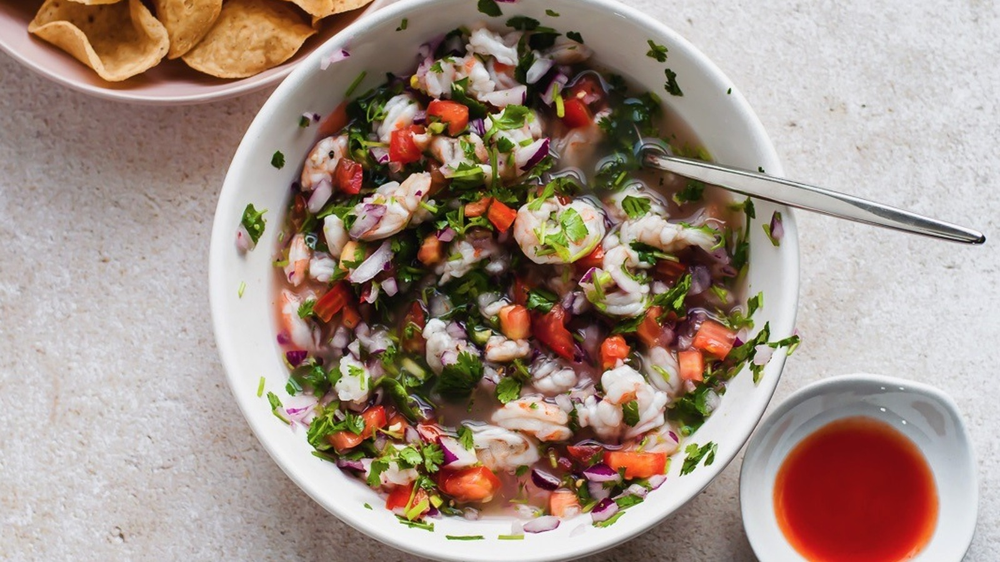

Mexican Ceviche

This is Authentic Mexican Ceviche. Everytime I make it for a gathering it's a hit.
This is my go to summer dish to cool of and feel refreshed. It's perfect for a pool party or even better, it's perfect for a day out at the beach. Whatever the case may be, this dish will leave you thinking about in the winter months. Although, who's to say you can't treat yourself and make this refreshing dish in the winter? Treat yourself.
Ingredients
- 5 large lemons, juiced
- 1 pound jumbo shrimp, peeled and deveined
- 1/4 cup chopped fresh cilantro, or to taste
- Tomato and clam juice cocktail
- 2 white onions, finely chopped
- 1 cucumber, peeled and finely chopped
- 1 large tomato, seeded and chopped
- 3 fresh jalapeno peppers, seeded and minced
- 1 bunch radishes, finely diced
- 2 cloves fresh garlic, minced
- Tortilla chips
Steps
- Place shrimp in a bowl (You may either coarsely chop the shrimp, or leave them whole, depending on your preference.) Add lemon, covering shrimp completely. Cover, and refrigerate for 30 minutes, or until opaque and slightly firm.
- Add tomatoes, onions, cucumber, radishes, and garlic; toss to combine. Gradually add cilantro and jalapenos to desired taste (jalapeno will grow stronger while marinating). Stir in tomato and clam juices to desired consistency. Cover, and refrigerate for 1 hour. Serve chilled with tortilla chips.